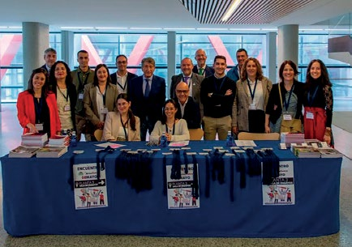
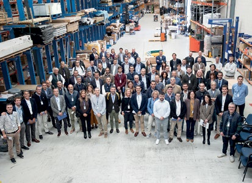
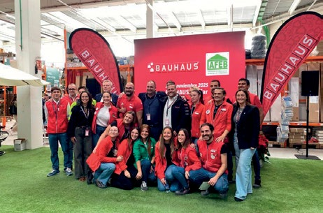

encuentro bricogroup 2025434 × 305 px · PDF p. 8Encuentros con la distribuciónDescargar · Fuente
encuentro synergas 2025413 × 301 px · PDF p. 8Encuentros con la distribuciónDescargar · Fuente
encuentro bauhaus 2025462 × 305 px · PDF p. 8Encuentros con la distribuciónDescargar · Fuente